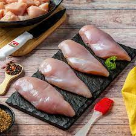

Masoor Dal with Chicken


chicken 100 grams Onion 1
Onion 1
 Tomato 1
Tomato 1
 Masoor dal 1/4
Masoor dal 1/4
 garlic 2 cloves
garlic 2 cloves
Serving Size: 1
Servings Per Recipe: 1
Serving Size: 1 cup
Calories: 300 kcal
| Nutrient | Amount | % Daily Value * | Total Carbohydrate | 10g | 33% |
|---|---|---|
| Dietary Fiber | 3g | 12% |
| Protein | 25g | 50% |
| Total Fat | 22g | 33.8% |
| Total Sugars | 5g | 0-0.5% |
| Saturated Fat | 20g | 75% |
| trans Fat | 0.5g | |
| cholestrol | 60mg | 20% |
| sodium | 200mg | 8.3% |